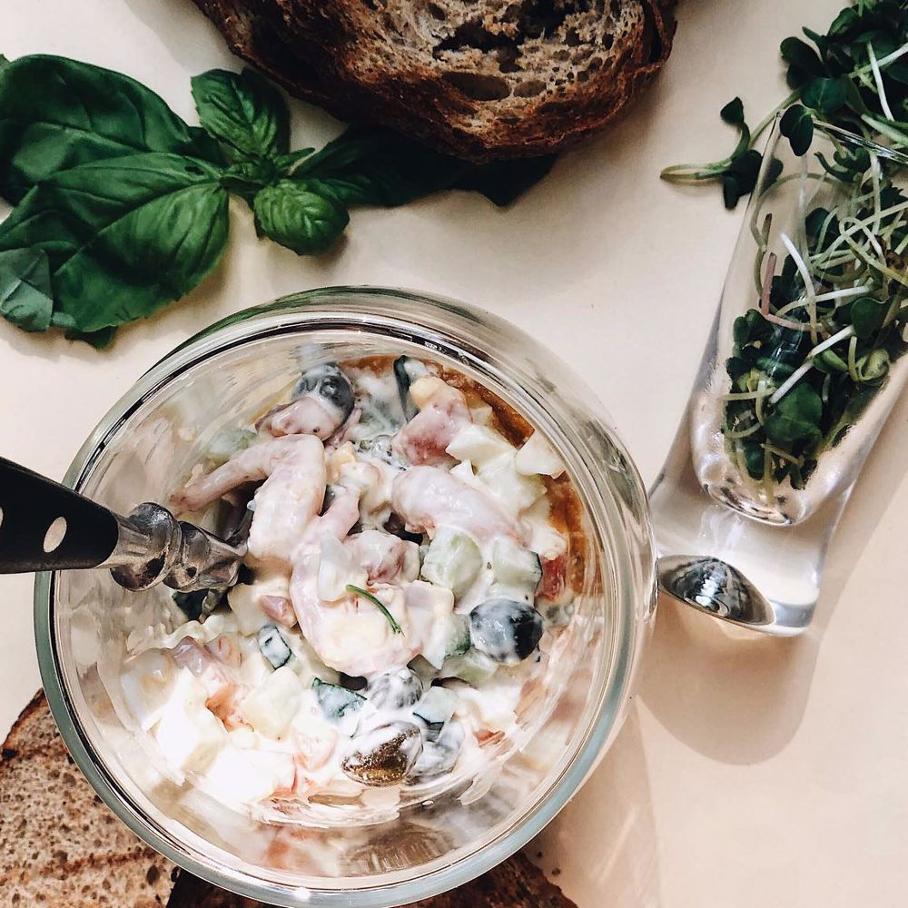
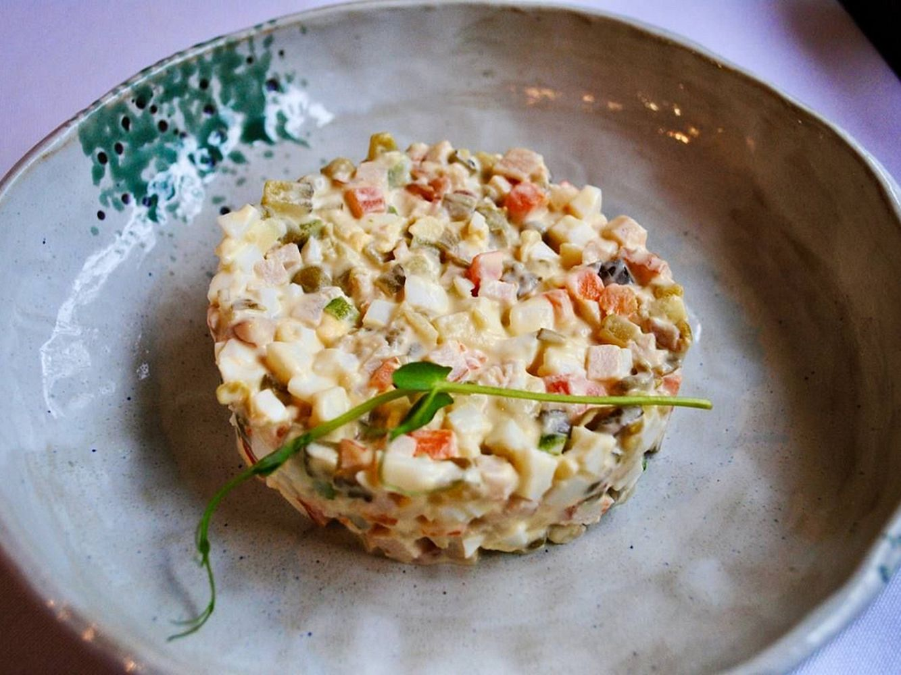
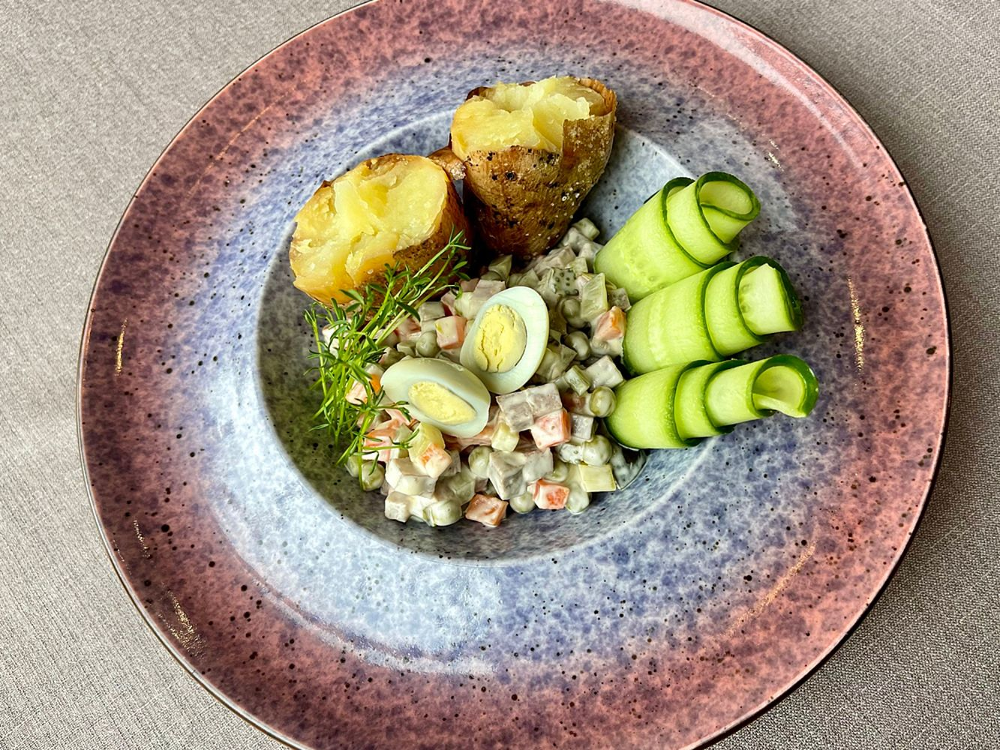
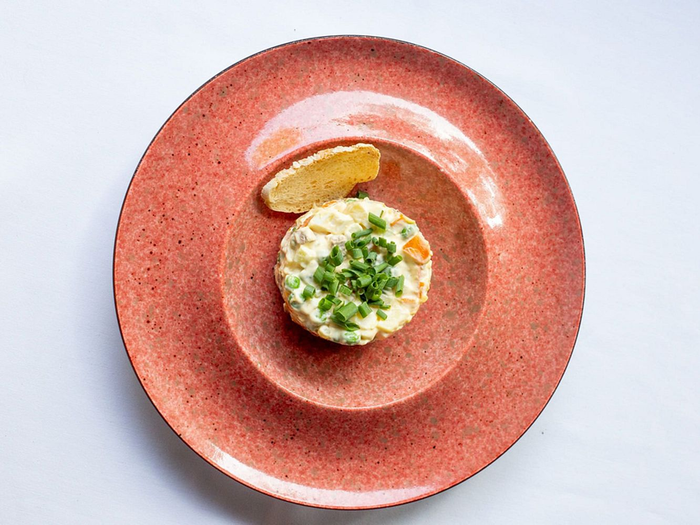
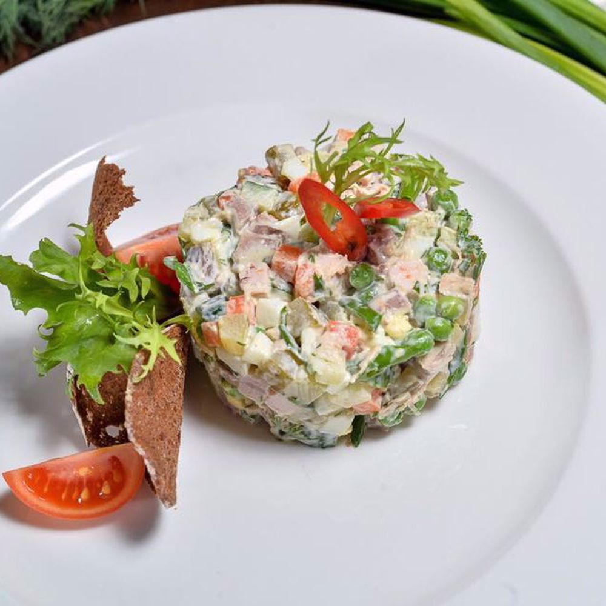
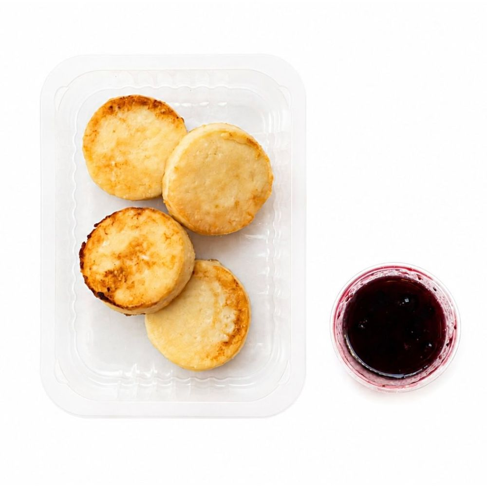
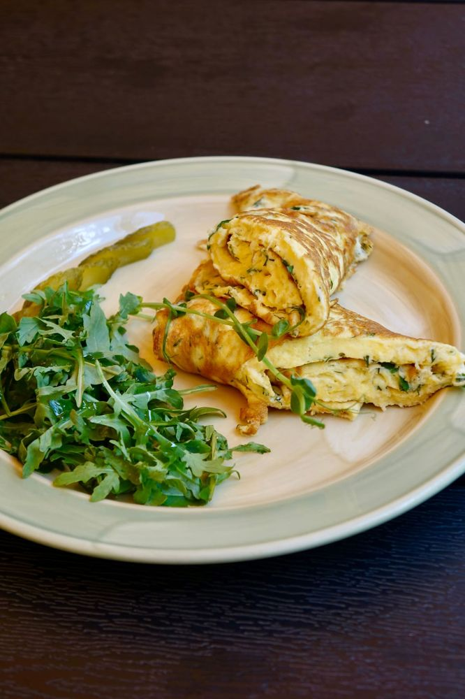
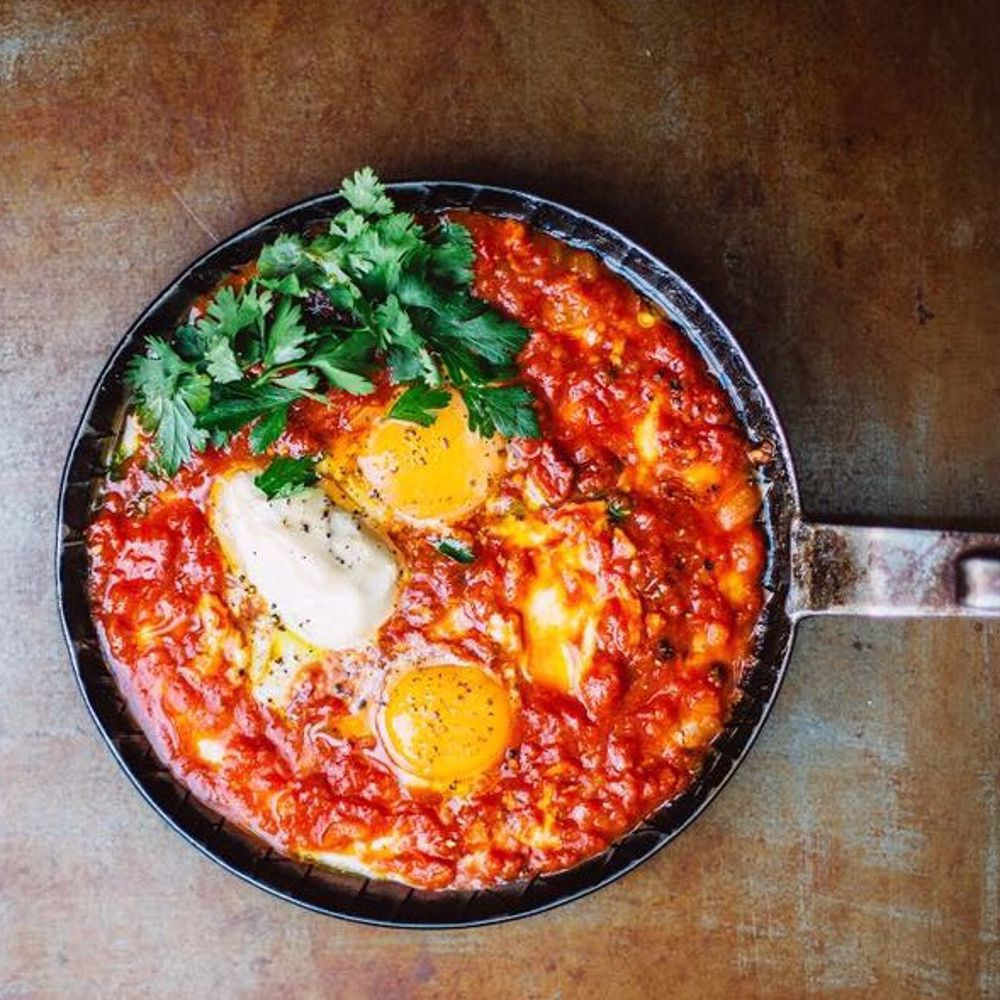
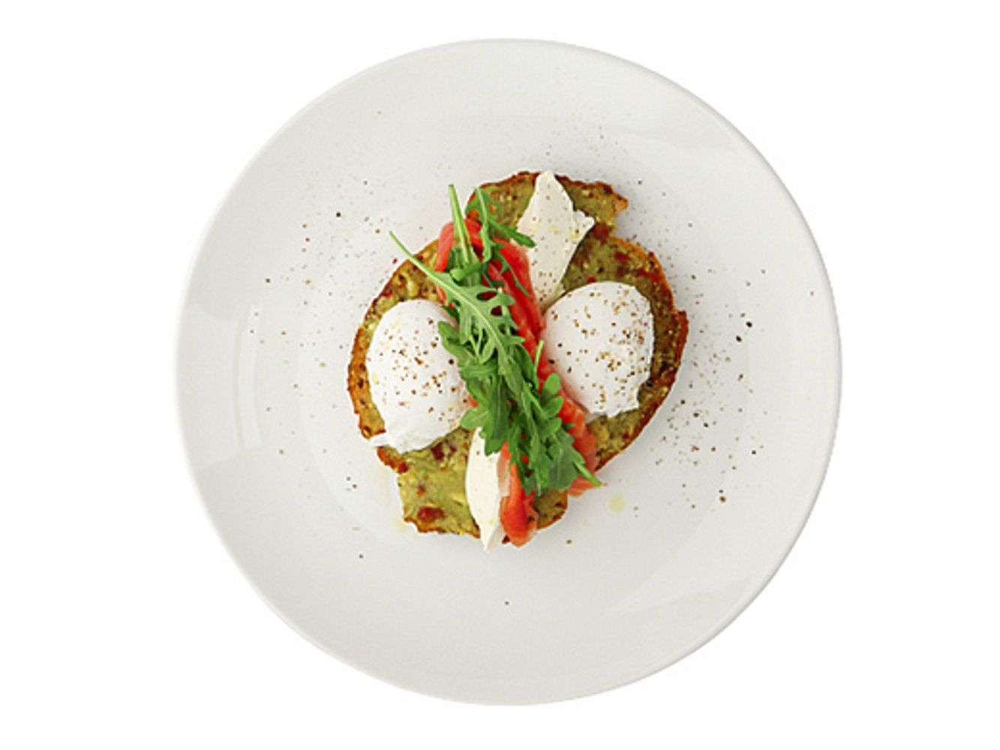
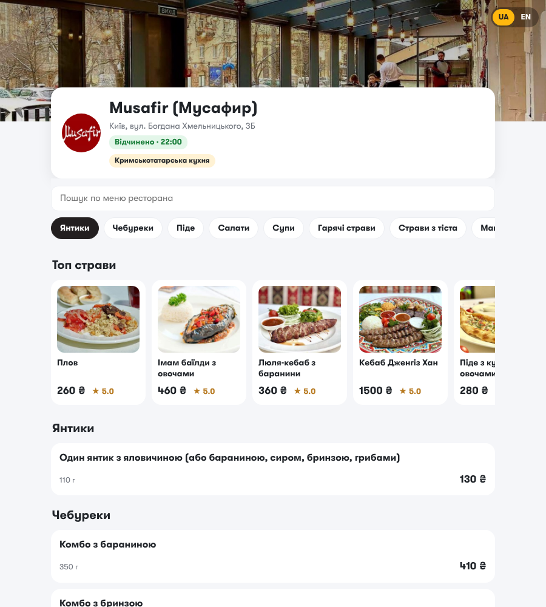

Юність

Опанас

Файна Фамілія

Тарас

Хуторець на Дніпрі
Зазвичай —
32 заклади в Києві
А ваш — домашній чи ресторанний? 👇
ціни з меню на TipMyMenu, 26.11.2026
посилання в біоДЛЯ КАФЕ Й РЕСТОРАНІВ
Чекліст — перевірте своє меню →
1 / 5
Гість обирає очима. Страва з фото виглядає зрозуміліше, ніж рядок тексту.
2 / 5
Ціна в меню, що не збігається з чеком, — найшвидший спосіб втратити довіру.
3 / 5
Що всередині і скільки грамів — особливо важливо для алергіків і тих, хто рахує бюджет.
4 / 5
Гість має знати, чи ви відчинені саме зараз — особливо у свята.
5 / 5
У Google і на карті — а не лише в PDF на сайті чи в сторіз.
Фото, ціни, вага, години роботи, сторінка в Google і QR на столи
tipmymenu.com/uk/restaurants/about4 страви і їхня звичайна ціна в Києві →

на фото: Тітка Клара, зі смородиновим варенням

на фото: Опанас, з сиром та зеленню

на фото: Любимый Дядя · ⭐ 4,1 (7 оцінок)

на фото: Very Well Cafe, з яйцями пашот і лососем
1 січня заклади часто відчиняються пізніше. Збережіть пост — 1-го скажете нам дякую 😉
посилання в біоціни з меню на TipMyMenu, 26.11.2026
ДЛЯ КАФЕ Й РЕСТОРАНІВ
menu_2024_final_v3.pdf

приклад: меню Musafir
Нехай на столі буде все, що любите, — і нехай не доведеться довго обирати 😉